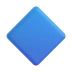
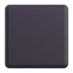
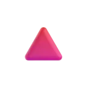

My English World
Book 4 · My Picture Dictionary

Unit 3
Shapes
Tap any picture or sentence to listen.
🖼️ Look and say

square

triangle
circle
star
heart
diamond
moon
oval
▶ Play all words
💬 Words in sentences
A ball is a circle.
🔊
A window is a square.
🔊
A slice of pizza is a triangle.
🔊
I can see a star in the sky.
🔊
▶ Play all sentences
‹ Numbers
All units
My Family ›